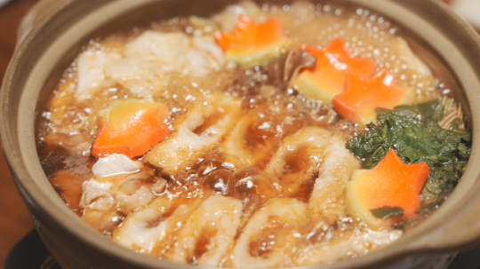
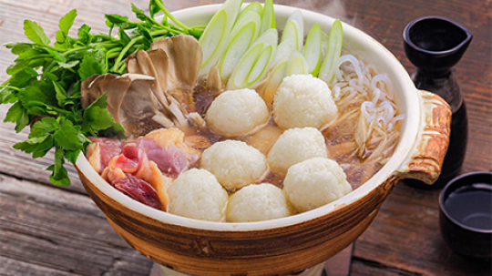
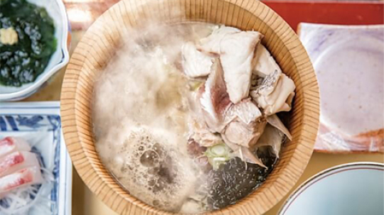
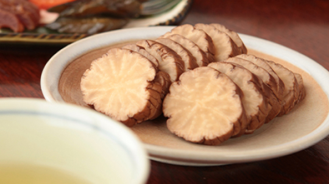

郷土料理

きりたんぽ鍋
秋の穫れたてのお米を使ったきりたんぽ鍋はまさにごちそう。
比内地鶏を使った醤油ベースの出汁に、きりたんぽ、きのこなどの秋の味覚を入れた鍋です。

稲庭うどん
秋田を代表する特産品のひとつ。
手で綯う作り方によってもたらされるコシの強さと、つるりとなめらかな喉越しが特徴です。

だまこ鍋
炊いたご飯を潰し、丸めたものを「だまこ」と呼びます。地鶏やきのこ、ごぼうなどを入れたスープで煮込んだものがだまこ鍋。もちもちのだまこがたまらない！

石焼料理
ぶつ切りにした魚介を木桶に入れ、熱した男鹿石を放り込み一気に煮立てる、味噌味の「石焼料理」。漁師たちの豪快な調理方法です。

いぶりがっこ
秋田では漬物のことを「がっこ」と呼びます。大根を桜や楢の木で燻したものを、糠漬けにしたものが「いぶりがっこ」です。燻香とパリパリの食感がクセになります。